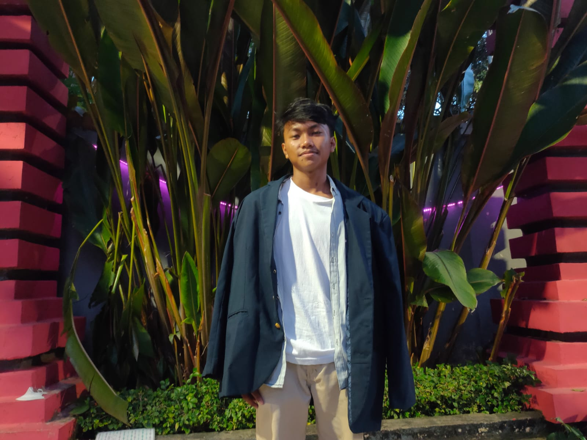

Smart Parking System adalah sebuah produk berbasis teknologi yang dirancang untuk mengoptimalkan penggunaan tempat parkir dengan menggunakan Internet of Things (IoT), machine learning, dan webcam. Produk ini menggabungkan teknologi canggih untuk memberikan solusi parkir yang efisien, nyaman, dan terhubung secara digital.
Dengan menggunakan perangkat keras seperti sensor IoT, kamera webcam, dan sistem komputasi yang terintegrasi, Smart Parking System dapat mendeteksi ketersediaan tempat parkir secara real-time. Data ketersediaan parkir kemudian diproses melalui algoritma machine learning yang cerdas untuk memberikan informasi akurat kepada pengguna. kami berkomitmen untuk menyediakan solusi parkir inovatif yang menyederhanakan kehidupan masyarakat. Tim kami bersemangat mengembangkan dan menghadirkan teknologi canggih yang membantu pelanggan menghemat waktu dan uang sekaligus memanfaatkan tempat parkir mereka semaksimal mungkin. Dengan pendekatan yang berpusat pada pelanggan, kami berusaha melampaui harapan dan membangun hubungan jangka panjang.
Fitur & Manfaat
Fitur
Integrasi IoT yang Efisien
Pembelajaran Mesin Tingkat Lanjut
Analisis Webcam yang Mulus
Data Parkir Waktu Nyata
Dukungan Berkelanjutan
Manfaat
Parkir Bebas Repot
Parkir Nyaman
Penggunaan Tempat Parkir yang Efisien
Hemat waktu
Kemitraan Berkelanjutan
Services
Solusi Parkir Cerdas
Solusi Parkir Cerdas kami memberikan panduan parkir otomatis, mengurangi kemacetan lalu lintas dan meningkatkan pendapatan bagi pemilik fasilitas parkir.
Apakah Anda lelah mencari tempat parkir tanpa henti? Kunjungi Smart Parking System, toko serba ada untuk solusi parkir tanpa kerumitan. Teknologi mutakhir kami menggabungkan kekuatan IoT, pembelajaran mesin, dan analitik webcam untuk menghadirkan layanan manajemen parkir yang unggul.
Solusi Parkir Cerdas kami memberikan berbagai manfaat, termasuk:
– Panduan parkir otomatis: Sistem panduan parkir real-time kami mengarahkan pengemudi ke tempat parkir yang tersedia, mengurangi waktu yang dihabiskan untuk mencari tempat parkir dan meningkatkan kenyamanan.
– Mengurangi kemacetan lalu lintas: Sistem kami membantu mengurangi jumlah mobil di jalan, mengurangi kemacetan dan dampak negatif terhadap lingkungan.
– Peningkatan pendapatan: Sistem manajemen parkir kami membantu meningkatkan pendapatan pemilik fasilitas parkir dengan mengoptimalkan penggunaan ruang yang tersedia.
– Peningkatan keselamatan dan keamanan: Sistem kami menyediakan pemantauan fasilitas parkir secara real-time, memastikan keselamatan dan keamanan bagi pengguna.
Kombinasi unik Integrasi IoT, pembelajaran mesin, dan analitik webcam kami menjadikan Solusi Parkir Cerdas kami yang paling canggih di pasar. Percayakan kepada kami untuk memberi Anda pengalaman parkir yang lancar dan bebas repot.
Hubungi kami untuk mempelajari lebih lanjut tentang Solusi Parkir Cerdas kami dan mulai menikmati parkir efisien hari ini!
Pembelajaran mesin
Layanan pembelajaran mesin kami menganalisis data parkir secara real-time, memberikan panduan parkir yang akurat dan meningkatkan manajemen parkir.
Di Smart Parking System, kami memanfaatkan kekuatan pembelajaran mesin untuk memberikan solusi parkir tingkat lanjut kepada klien kami. Tim ahli kami menggunakan algoritme pembelajaran mesin untuk menganalisis data parkir, memberikan wawasan waktu nyata mengenai penggunaan fasilitas parkir.
Layanan pembelajaran mesin kami memberikan berbagai manfaat, termasuk:
– Panduan parkir yang akurat: Algoritme pembelajaran mesin kami menganalisis data parkir secara real-time, memberikan panduan parkir yang akurat kepada pengemudi.
– Peningkatan manajemen parkir: Sistem kami menggunakan pembelajaran mesin untuk memprediksi penggunaan fasilitas parkir, mengoptimalkan penggunaan tempat parkir yang tersedia, dan mengurangi jumlah mobil di jalan.
– Pengalaman pengguna yang ditingkatkan: Sistem kami membantu meningkatkan pengalaman pengguna dengan memberikan pengalaman parkir yang lancar dan bebas kerumitan.
Dengan Sistem Parkir Cerdas, Anda mendapatkan layanan pembelajaran mesin tercanggih di pasar. Percayakan kepada kami untuk memberikan Anda pengalaman parkir yang efisien, nyaman, dan bebas repot.
Hubungi kami untuk mempelajari lebih lanjut tentang layanan pembelajaran mesin kami dan mulai menikmati parkir yang efisien hari ini!
Integrasi Internet of Things
Integrasi IoT kami menghubungkan perangkat dan sensor ke Sistem Parkir Cerdas kami, memberikan panduan parkir waktu nyata dan manajemen parkir yang lebih baik.
Di Smart Parking System, kami memahami pentingnya memanfaatkan teknologi terkini untuk memberikan solusi parkir yang efisien dan efektif. Itu sebabnya kami menawarkan layanan Integrasi IoT yang memungkinkan kami menghubungkan perangkat dan sensor ke Sistem Parkir Cerdas kami.
Layanan Integrasi IoT kami menggunakan kekuatan internet untuk menghubungkan perangkat dan sensor ke Sistem Parkir Cerdas kami, sehingga memungkinkan kami memberikan panduan dan pengelolaan parkir secara real-time. Dengan menghubungkan perangkat seperti webcam, sensor, dan ponsel pintar ke sistem kami, kami dapat memastikan bahwa tempat parkir dimanfaatkan secara maksimal, meningkatkan kenyamanan dan mengurangi kemacetan lalu lintas.
Layanan Integrasi IoT kami memberikan berbagai manfaat, termasuk:
– Panduan parkir waktu nyata: Sistem kami memberikan panduan parkir waktu nyata kepada pengemudi, mengarahkan mereka ke tempat parkir yang tersedia dan mengurangi waktu yang dihabiskan untuk mencari tempat parkir.
– Peningkatan manajemen parkir: Sistem kami memungkinkan kami memantau fasilitas parkir secara real-time, mengoptimalkan penggunaan tempat parkir yang tersedia dan mengurangi jumlah mobil di jalan.
– Pengalaman pengguna yang ditingkatkan: Sistem kami membantu meningkatkan pengalaman pengguna dengan memberikan pengalaman parkir yang lancar dan bebas kerumitan.
Percayai Sistem Parkir Cerdas untuk memberi Anda layanan Integrasi IoT tercanggih di pasar. Hubungi kami untuk mempelajari lebih lanjut atau memulai layanan kami hari ini!
Tim Kami
Albiona Qolbu Soukhi
( 22091397076 )
Ageng Kurniawan
( 22091397077 )

Danar Adrian Ridho Nugroho
( 22091397087 )
Penilaian & Ulasan Client
4.8 ★
2,394 Rating
4+
Rating 4+
★★★★★
Sistem Parkir Cerdas adalah masa depan parkir. Teknologinya tak tertandingi, dan membuat parkir menjadi bebas repot. Kami sangat merekomendasikan produk ini kepada siapa pun yang mencari solusi parkir yang nyaman dan efisien.
Avie Siena
★★★★
Sistem Parkir Cerdas telah mengubah pengalaman parkir kami. Teknologi inovatifnya membuat parkir menjadi mudah dan menghemat banyak waktu. Tim di belakangnya profesional dan suportif, dan kami sangat merekomendasikan produk ini.
Danu Teguh
★★★★
Sistem Parkir Cerdas telah menjadikan parkir bebas stres dan kerumitan. Teknologinya canggih, dan analisisnya sangat tepat. Kami sangat merekomendasikan produk ini kepada siapa pun yang mencari pengalaman parkir yang lancar.
Satria Baja Hitam
★★★★★
Sistem Parkir Cerdas adalah solusi parkir terbaik di luar sana. Teknologi dan analitiknya yang canggih menjadikan parkir menjadi sederhana dan nyaman. Kami sangat merekomendasikan produk ini kepada siapa pun yang mencari solusi parkir yang efisien.